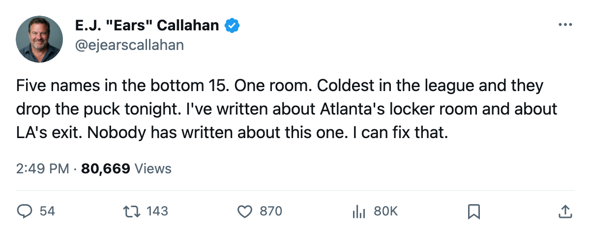
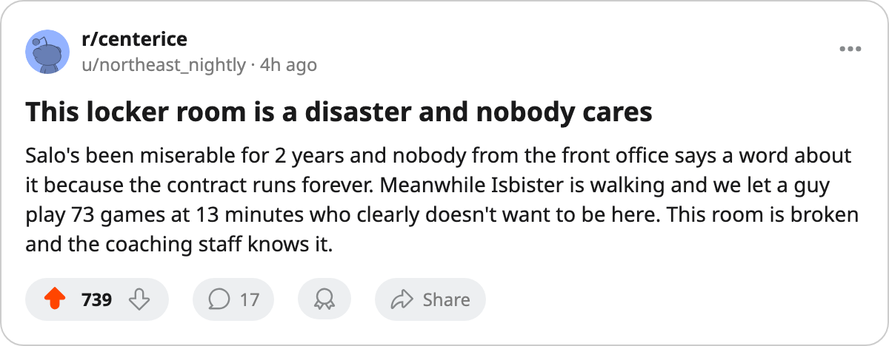

Sources: 5 of the League's 15 Lowest Morales Wear Edmonton. Game 1 Is Tonight.
The Bureau's Morale Scale puts the room at 86.3, dead last. 4 of the 5 are playing for a new deal.
 E.J. "Ears" CallahanInsider · The Hot Stove
E.J. "Ears" CallahanInsider · The Hot Stove

Morale at 86.3, 5 of the bottom 15, Game 1 tonight

 Edmonton Oilers carries 5 of the league's 15 lowest readings on the Bureau's Morale Scale. No other club has more than 2. The Oilers sit at a club average of 86.3, dead last, ahead of
Edmonton Oilers carries 5 of the league's 15 lowest readings on the Bureau's Morale Scale. No other club has more than 2. The Oilers sit at a club average of 86.3, dead last, ahead of  Atlanta Thrashers at 86.6 and nobody else within a point. Game 1 of their second-round series against
Atlanta Thrashers at 86.6 and nobody else within a point. Game 1 of their second-round series against  Mighty Ducks of Anaheim drops tonight at home.
Mighty Ducks of Anaheim drops tonight at home.
The five names:
| Player | Morale | Salary | Years left | Overall | GP | MPG |
|---|---|---|---|---|---|---|
 Shawn Horcoff67 Shawn Horcoff67 | 72 | $0.60M | 1 | 65 | ||
 Brad May76 Brad May76 | 72 | $1.10M | 1 | 73 | 44 | 9.6 |
| Jason Chimera | 74 | $0.50M | 1 | 67 | 5 | 6.4 |
 Tommy Salo88 Tommy Salo88 | 74 | $3.50M | 4 | 85 | 71 | 61.6 |
 Brad Isbister80 Brad Isbister80 | 77 | $1.40M | 0 | 78 | 73 | 13.2 |
Four of the five are playing for a new deal
Brad Isbister has 0 years left. 73 games at 13.2 minutes a night, $1.40M walking in July. Brad May managed 44 appearances at 9.6 minutes. Jason Chimera logged 5 games at 6.4. Shawn Horcoff has no games on the record at all, a depth center at $0.60M with a morale of 72 and 1 year left. None of these four reads like a man the coaching staff wants in October.
Tommy Salo is the longer problem. 4 years left at $3.50M a season, a morale of 74, 71 games at 61.6 minutes a night. He is the workhorse between the pipes and the highest-paid unhappy man in the bottom tier. A league source questions whether any club takes Salo at that number with 4 years remaining. The Oilers cannot trade him at value, cannot move him, and cannot ignore a 74 on the Morale Scale in a room already at the floor.
Edmonton has nothing to wait with
 Nashville Predators's Som Richards told The Tunnel's Jan Kowalczyk this week that his core is locked and that he can wait in free agency because he has no reason to panic in July. Edmonton has no such position. Isbister walks. May, Chimera and Horcoff all have 1 year left. The 4 names with years remaining include a goaltender the club is trapped behind.
Nashville Predators's Som Richards told The Tunnel's Jan Kowalczyk this week that his core is locked and that he can wait in free agency because he has no reason to panic in July. Edmonton has no such position. Isbister walks. May, Chimera and Horcoff all have 1 year left. The 4 names with years remaining include a goaltender the club is trapped behind.
Edmonton beat  Vancouver Canucks in 6 to reach this round. The injury list is thin:
Vancouver Canucks in 6 to reach this round. The injury list is thin:  Oleg Petrov75 sits with a knee, back May 1, and
Oleg Petrov75 sits with a knee, back May 1, and  Marty Reasoner73 carries an elbow, back July 5. Two men out, and the room problem is not the one that shows up on a trainer's report.
Marty Reasoner73 carries an elbow, back July 5. Two men out, and the room problem is not the one that shows up on a trainer's report.
The Oilers open a second-round series tonight knowing the Bureau has graded their room worse than any other in the league. Mighty Ducks of Anaheim arrives at 91.4 on the Morale Scale, 5 points higher.

